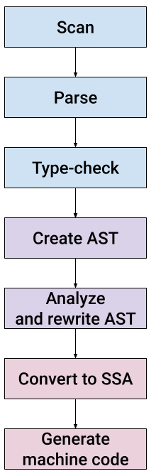
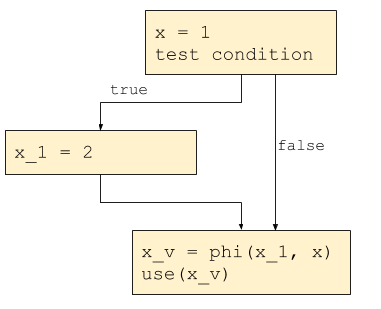
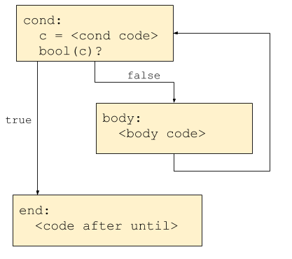

Updated (2023-05-08): the Go compiler keeps evolving and it takes time to keep up with changes. While the general gist of this post remains true and it's worth reading to understand how the compiler works on a high level, the details of the modifications are slightly different now.
To see up-do-date changes that work with the latest Go (in-development version 1.21 at the time of this update), check out the adduntil-121-part2 branch from my GitHub fork of the Go repository. Diff it vs. the master branch to see the full list of changes.
This is the second post in a two-part series exploring the Go compiler. In part 1, we added a new statement to the Go language by building a custom version of the compiler. To do this, we've covered the first five stages of the compiler per this diagram:
We ended up implementing until by lowering it to for in the "rewrite AST" stage; specifically, in walk/stmt.go where other, similar transformations are done before the compiler gets to SSA conversion and code generation.
In this part, we'll cover the remaining stages of the compiler by handling the new until statement later on in the compilation flow.
SSA
After gc runs walk transforms, it calls Compile (in ssagen/pgen.go) to convert the AST into a new intermediate representation (IR) that's in static single assignment (SSA) form.
What does SSA mean, and why does the compiler do this? Let's start with the first question; I recommend reading the SSA wikipedia page linked above and additional resources, but here is a quick explanation.
Static single assignment means that every variable assigned in the IR is only assigned once. Consider this pseudo-IR:
x = 1
y = 7
// do stuff with x and y
x = y
y = func()
// do more stuff with x and y
This is not SSA, because the names x and y are assigned multiple times. If we convert this snippet to SSA, we may get something like:
x = 1
y = 7
// do stuff with x and y
x_1 = y
y_1 = func()
// do more stuff with x_1 and y_1
Note how every assignment got a unique variable name. When x got reassigned a different value, a new name x_1 was created instead. You may wonder how this works in the general case... what happens with code like this:
x = 1
if condition: x = 2
use(x)
If we simply rename the second assignment to x_1 = 2, what will use take? x or x_1 or ...? To handle this important scenario, IRs in SSA form have special phi (originally phony) functions that select a value based on which code path it came from. It's going to look like this:
This phi node is used by the compiler to maintain SSA while analyzing and optimizing such IRs, and is replaced by actual machine code at a later stage.
The static part of the SSA name plays a role similar to the one in static typing; it means the assignment for each name is unique when looking at the source code (at compile time, or statically), while it can happen multiple times at run-time. If the code sample shown above is in a loop, then the actual x_1 = 2 assignment can happen many times.
Now that we have a basic idea of what SSA is, the next question is why.
Optimizations are an important part of a compiler backend [1], and backends are usually structured specifically to facilitate effective and efficient optimizations. Looking at this code snippet again:
x = 1
if condition: x = 2
use(x)
And suppose the compiler wants to run a very common optimization - constant propagation; that is, it wants to replace all uses of x with 1 after the x = 1 assignment. How would it go about that? It can't just find all the references to x following the assignment because x can be rewritten to something else (as in our example).
Consider this snippet:
z = x + y
In the general case, the compiler has to perform data-flow analysis to find:
- Which definitions x and y refer to. This isn't easy in the presence of control flow, and requires dominance analysis.
- Where z is used after this definition, which is similarly challenging.
Such analysis is expensive to create and to maintain, both in terms of time and space. Moreover, it has to be rerun after every optimization (at least partially).
SSA provides a great alternative. If z = x + y is in SSA, we know immediately which definitions x and y refer to (there can only be one!), and we know immediately where z is used (all references to z following this statement). In SSA, the uses and definitions are encoded in the IR, and optimizations don't violate the invariant.
SSA in the Go compiler
We move on to describe how SSA is constructed and used in the Go compiler. SSA was added to Go in release 1.7. Much of its code lives in ssa/ and ssagen/ (recall that all these paths are relative to src/cmd/internal/compile/ in the Go source checkout). The README file in the ssa directory is a very useful explanation of the Go SSA - check it out!
The Go SSA implementation also has some of the best compiler tooling I've seen (having worked on compilers for many years). By setting the GOSSAFUNC environment variable, we get an HTML page with all the compilation stages and the IR after each, so we can easily detect which optimization goes awry if needed. An additional setting can draw the control-flow graph as SVG for every pass.
Let's study the initial SSA created from AST for this code snippet:
func usefor() {
i := 4
for !(i == 0) {
i--
sayhi()
}
}
func sayhi() {
fmt.Println("Hello, for!")
}
The reason I moved the printout to its own function is to make the result SSA cleaner. Compiling with -l to disable inlining, this leaves a tiny call for sayhi() (whereas the call for fmt.Printl generates much more code due to the constant string).
The resulting SSA is:
b1:
v1 (?) = InitMem <mem>
v2 (?) = SP <uintptr>
v3 (?) = SB <uintptr>
v4 (?) = Const64 <int> [4] (i[int])
v6 (?) = Const64 <int> [0]
v9 (?) = Const64 <int> [1]
Plain → b2 (10)
b2: ← b1 b4
v5 (10) = Phi <int> v4 v10 (i[int])
v14 (14) = Phi <mem> v1 v12
v7 (10) = Eq64 <bool> v5 v6
If v7 → b5 b3 (unlikely) (10)
b3: ← b2
v8 (11) = Copy <int> v5 (i[int])
v10 (11) = Sub64 <int> v8 v9 (i[int])
v11 (12) = Copy <mem> v14
v12 (12) = StaticCall <mem> {"".sayhi} v11
Plain → b4 (12)
b4: ← b3
Plain → b2 (10)
b5: ← b2
v13 (14) = Copy <mem> v14
Ret v13
The interesting pieces to note here are:
- bN are the basic blocks of the control-flow graph.
- Phi nodes are explicit. The most interesting one is the assignment to v5. This is precisely the selector assigning into i; one path comes from v4 (the initializer), another from v10 (the i--) inside the body loop.
- Ignore the nodes with <mem> for the purpose of this exercise. Go has an interesting way to explicitly propagate memory state in its IR, and we don't deal with it in this post. See the aforementioned README for more details, if interested.
Incidentally, the kind of for loop here is exactly what we'd like to transform our until statements to.
Converting until AST nodes to SSA
As usual, our code will be modeled on the handling of for statements. First, let's start by sketching how the control-flow graph should look for until statements:
Now we just have to build this CFG in code. Reminder: the new AST node type we added in part 1 is OUNTIL. We'll add a new switch clause in the state.stmt method in ssagen/stmt.go to translate an AST node with the OUNTIL op to SSA. The naming of blocks and comments should make following the code easy and provide correlation to the CFG shown above.
case ir.OUNTIL:
// OUNTIL: until Ninit; Left { Nbody }
// cond (Left); body (Nbody)
n := n.(*ir.UntilStmt)
bCond := s.f.NewBlock(ssa.BlockPlain)
bBody := s.f.NewBlock(ssa.BlockPlain)
bEnd := s.f.NewBlock(ssa.BlockPlain)
bBody.Pos = n.Pos()
// first, entry jump to the condition
b := s.endBlock()
b.AddEdgeTo(bCond)
// generate code to test condition
s.startBlock(bCond)
if n.Cond != nil {
s.condBranch(n.Cond, bEnd, bBody, 1)
} else {
b := s.endBlock()
b.Kind = ssa.BlockPlain
b.AddEdgeTo(bBody)
}
// set up for continue/break in body
prevContinue := s.continueTo
prevBreak := s.breakTo
s.continueTo = bCond
s.breakTo = bEnd
var lab *ssaLabel
if sym := n.Label; sym != nil {
// labeled until loop
lab = s.label(sym)
lab.continueTarget = bCond
lab.breakTarget = bEnd
}
// generate body
s.startBlock(bBody)
s.stmtList(n.Body)
// tear down continue/break
s.continueTo = prevContinue
s.breakTo = prevBreak
if lab != nil {
lab.continueTarget = nil
lab.breakTarget = nil
}
// done with body, goto cond
if b := s.endBlock(); b != nil {
b.AddEdgeTo(bCond)
}
s.startBlock(bEnd)
If you're wondering where n.Init is handled - it's done before the switch, uniformly for all node types.
One more thing; we should remove the AST rewrite we've added to walk/stmt.go to no longer rewrite UntilStmt nodes to ForStmt, since we've taught the SSA layer to handle untils directly. walkUntil thus becomes:
func walkUntil(n *ir.UntilStmt) ir.Node {
if n.Cond != nil {
init := ir.TakeInit(n.Cond)
walkStmtList(init)
n.Cond = walkExpr(n.Cond, &init)
n.Cond = ir.InitExpr(init, n.Cond)
}
walkStmtList(n.Body)
return n
}
This is it! If we run the compiler - dumping the SSA as before - on this code:
func useuntil() {
i := 4
until i == 0 {
i--
sayhi()
}
}
func sayhi() {
fmt.Println("Hello, for!")
}
We'll get SSA which is structurally equivalent to the one we had for the for loop with a negated condition, as expected.
SSA transformations
After the initial SSA is constructed, the compiler runs a long sequence of passes on the SSA IR to:
- Perform optimizations
- Lower it to a form closer to machine code
All the passes can be found in the passes slice in ssa/compile.go, and some constraints on the order in which they can be run in the passOrder slice in the same file. The optimizations are fairly standard for modern compilers. Lowering consists of instruction selection for the specific architecture we're compiling, and register allocation.
For additional details on these passes see the SSA README and also this post, which goes into interesting details of how SSA optimization rules are specified.
Generate machine code
Finally, the compiler invokes genssa (in genssa/ssa.go) to emit machine code from the SSA IR. We don't have to modify any of this code because the SSA we've emitted for until statements consists of building blocks that are used elsewhere in the compiler - we don't add new instruction types, etc.
However, it's instructional to study the machine code generated for our useuntil function. Go has its own assembly syntax with historical roots. I won't go into all the details here, but the following is an annotated (with # comments) assembly dump which should be reasonably easy to follow. I've removed some directives for the garbage collector (PCDATA and FUNCDATA) to make the output smaller.
"".useuntil STEXT size=76 args=0x0 locals=0x10
0x0000 00000 (useuntil.go:5) TEXT "".useuntil(SB), ABIInternal, $16-0
# Function prologue
0x0000 00000 (useuntil.go:5) MOVQ (TLS), CX
0x0009 00009 (useuntil.go:5) CMPQ SP, 16(CX)
0x000d 00013 (useuntil.go:5) JLS 69
0x000f 00015 (useuntil.go:5) SUBQ $16, SP
0x0013 00019 (useuntil.go:5) MOVQ BP, 8(SP)
0x0018 00024 (useuntil.go:5) LEAQ 8(SP), BP
# AX will be used to hold 'i', the loop counter; it's initialized
# with the constant 4. Then, unconditional jump to the 'cond' block.
0x001d 00029 (useuntil.go:5) MOVL $4, AX
0x0022 00034 (useuntil.go:7) JMP 62
# The end block is here, it executes the function epilogue and returns.
0x0024 00036 (<unknown line number>) MOVQ 8(SP), BP
0x0029 00041 (<unknown line number>) ADDQ $16, SP
0x002d 00045 (<unknown line number>) RET
# This is the loop body. AX is saved on the stack, so as to
# avoid being clobbered by "sayhi" (this is the caller-saved
# calling convention). Then "sayhi" is called.
0x002e 00046 (useuntil.go:7) MOVQ AX, "".i(SP)
0x0032 00050 (useuntil.go:9) CALL "".sayhi(SB)
# Restore AX (i) from the stack and decrement it.
0x0037 00055 (useuntil.go:8) MOVQ "".i(SP), AX
0x003b 00059 (useuntil.go:8) DECQ AX
# The cond block is here. AX == 0 is tested, and if it's true, jump to
# the end block. Otherwise, it jumps to the loop body.
0x003e 00062 (useuntil.go:7) TESTQ AX, AX
0x0041 00065 (useuntil.go:7) JEQ 36
0x0043 00067 (useuntil.go:7) JMP 46
0x0045 00069 (useuntil.go:7) NOP
0x0045 00069 (useuntil.go:5) CALL runtime.morestack_noctxt(SB)
0x004a 00074 (useuntil.go:5) JMP 0
You may have noticed that the "cond" block moved to the end of the function, which is not where it was originally in the SSA representation. What gives?
The answer is the "loop rotate" pass that runs on SSA towards the very end. This pass reorders the blocks such that the body flows directly into the cond, avoiding an extra jump per iteration. See ssa/looprotate.go for more details if you're interested.
Conclusion
That's it! In these two posts we've examined some of the internals of the Go compiler by implementing a new statement in two different ways. This is only the tip of the iceberg, of course, but I hope it provides a good starting point to begin exploring on your own.
A final note: we've built a working compiler here, but none of the Go tooling will recognize the new until keyword. Unfortunately, at this time the Go tooling uses a mostly different path for parsing Go code and doesn't share this code with the Go compiler itself. I'll write about processing Go code with tools in much more detail in future posts.
Appendix - reproducing these results
To reproduce the version of the Go toolchain we ended up with here, you can start from part 1, and follow this post's code snippets. Or you could just grab the adduntil-119-part2 branch from my fork.
To get the SSA for all the SSA and code generation passes in a single convenient HTML file, run the following after building the toolchain:
GOSSAFUNC=useuntil <src checkout>/bin/go tool compile -l useuntil.go
And open ssa.html in your browser. If you also want to see the CFG for some pass, add the pass name after the function name, separated by :; for example GOSSAFUNC=useuntil:number_lines.
To get the machine code dump, run:
<src checkout>/bin/go tool compile -l -S useuntil.go
| [1] | I specifically try to avoid saying "frontend" and "backend" too much in these posts. These terms are overloaded and imprecise, but usually the frontent is everything that happens until the AST is constructed, while the backend is the stages that work on representations closer to the machine than to the original language. This leaves a lot of place in the middle, of course, and middle-end is also widely used (though nonsensical) to describe everything that happens in-between. In large and complex compilers you'll hear about "the backend of the frontend" and "the frontend of the backend" and similar mashups with "middle". In Go the situation isn't very bad and the boundary is reasonably clearly deliniated. The AST is syntactically close to the input language while the SSA is not. The conversion from AST to SSA is a good line to draw as the front/back split of the Go compiler. |
| [2] | -S tells the compiler to dump assembly source to stdout; -l disables inlining, which would obscure the main loop a bit by inlining the fmt.Println call. |